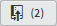

8.5
Conflicts between local and remote repositories
This is a re-enactment of what we did in § 6.7.3 where we made conflicting changes to the same line of the style.css file. In that case it was merging separate branches; here it will be merging changes between the remote and local repositories.
The style.css file currently is (in both the remote and local repositories):
h1, h2, h3, h4, h5, h6 { /* set standard headings */
font-family: sans-serif;
font-weight:normal;
font-size: 3rem;
padding: 2rem 5rem 2rem 5rem;
}
h3 { font-size: 2.5rem; }
.cover-fig { /* holder for cover image */
width: 50%;
margin: 2rem auto;
padding: 0;
}
| Code 8.3 style.css d-03-contact local repository |
Firstly let’s modify the file in the local repository.
Make sure you are on the d-03-contact branch, open style.css and add a colour declaration to the h3 element (this is exactly the same change we made in § 6.7.3):
h3 { font-size: 2.5rem; color: #c0504d; }
The h3 colour is changed to red. Save the change and commit it with the commit message:
D: Incremental build - 03-contact page |
|---|
| Style.css modified <h3> colour changed to red. |
My commit point is [f52a6a5]. Tag the commit with the label d‑P03.03.03.
The Git pane is showing one change that needs to be pushed to the remote:
Figure 8.47 Bracket—style.css change in local repository
Now let’s do the same in GitHub. Open the lab-01-website repository, select the d-03-contact branch and click the 11-resources folder to open it, then click 01-css and finally style.css. This will open a preview of the file:
Figure 8.48 GitHub—style.css preview in remote repository
Click the pencil to edit the file (highlighted):
Change line 30 to make it blue:
h3 { font-size: 2.5rem; color: #4F81BD; }
And add this commit message:
D: Incremental build - 03-contact page |
|---|
| Style.css modified <h3> colour changed to blue. |
It looks like this:
Figure 8.49 GitHub—style.css edit in remote repository
Click the button. On the repository home page the new commit is [80fe002].
The workflows for the local and remote repositories are now (I’m only showing the d-03-contact branch):
Figure 8.50 Local repository workflow
Figure 8.51 Remote repository workflow
Let’s refresh the counters in Brackets, click the button  .
.
It gives this:
Figure 8.52 Brackets—Refresh counters
Not surprisingly we are showing one change to pull and one to push.
So what do we do? Do we push or do we pull?—or as the Clash didn't say “should I suck or should I blow?”
Well, the remote repository is the master repository so we pull its information into our repository and merge it together before we push it back with our changes.
The rule is:
|
ALWAYS PULL CHANGES FROM THE REMOTE |
So let’s do that. Click the button  . This opens the pull dialogue box:
. This opens the pull dialogue box:

Figure 8.53 Bracket—pull dialogue box
Again leave all the defaults and click . This time the response is a conflict:
Figure 8.54 Bracket—pull response dialogue box
It tells us that we have a conflict in style.css (as we would expect).
Click , and Brackets will have opened a merged version of style.css in the editor showing the conflict. This process is now identical to resolving the merge conflict we had in § 6.7.3 and Figure 6.77:

Figure 8.55 Brackets—with a merge conflict
Again we have an button in the Git pane. Click that and we go back to where we were before we tried to merge the repositories.
Brackets is telling us there is a conflict in the style.css file in just the same way as before, but this time the conflict is between the local head on d-03-contact and the remote d-03-contact branch on the remote lab-01-website repository:
<<<<<<< HEAD
h3 { font-size: 2.5rem; color: #4F81BD; }
=======
h3 { font-size: 2.5rem; color: #c0504d;}
>>>>>>> lab-01-website/d-03-contact
| Code 8.4 style.css with a conflict |
It starts with a line of less than signs:
<<<<<<< HEAD
the HEAD tells us that what follows is from the current local head (which is on the local d-03-contact branch).
The line that follows it is how the code is on the local branch (the red version):
h3 { font-size: 2.5rem; color: #4F81BD; }
Then we have a row of equal signs, this is just a divider:
=======
The last two lines are how the code is on the remote repository branch d-03-contact (this is the blue version):
h3 { font-size: 2.5rem; color: #c0504d;}
>>>>>>> lab-01-website/d-03-contact
The greater than signs show the merging repository, the lab-01-website is what we called the link to the remote repository (Figure 8.13) the /d-03-contact identifies the remote branch.
Again, Brackets is telling us it can’t decide what to do and it wants us to manually change the file to the correct version.
This time I’m going to keep the local (red) version.
Make the modifications:
h1, h2, h3, h4, h5, h6 { /* set standard headings */
font-family: sans-serif;
font-weight:normal;
font-size: 3rem;
padding: 2rem 5rem 2rem 5rem;
}
h3 { font-size: 2.5rem; color: #c0504d; }
.cover-fig { /* holder for cover image */
| Code 8.5 Resolved style.css |
- You must delete the lines with the less than, greater than and equals signs too.

Figure 8.56 Brackets—modified file after remote/local conflict
Save style.css and make sure it is staged (tick the box in the Git pane).
Now click .
This will open a merge commit message dialogue box:
Figure 8.57 Brackets—merge commit dialogue box
Just go with the default message, click and return to Brackets:
Figure 8.58 Brackets—after the local/remote merge
So what’s happened?
Well, the local repository now has its original commit with the modified style.css (red) [f52a6a5]; it also has the commit for the modified style.css (blue) from the remote repository [80fe002]; and finally, it has a new merge commit [a150909] that resolves the conflict between the remote and local repositories (makes it red again).
Give the new commit point the tag s-P03.03.P04.
The local work flow is:
Figure 8.59 Brackets—local workflow after merge
Brackets is now reporting that there are two commits to push back to the remote repository: . The two commits are the original style.css modification [f52a6a5] and the latest merge commit [a150909].
Let’s do the push to complete the thing. Click the button .
Tick the box on the push to remote dialogue box and click , and click again to close the response box.
Now to GitHub. Refresh the repository and make sure the d-03-commit branch is active. I have this:
Figure 8.60 GitHub—local/remote merged repositories
GitHub is reporting 13 commits and that the latest commit is [a150909]. Go to the commits screen, everything is there:
Figure 8.61 GitHub—all commits
The final workflow (in full) is:
Figure 8.62 GitHub—workflow

{kind=link}
{kind=link}
{kind=link}
{kind=link}
{kind=link}
{kind=link}
{kind=link}
{kind=link}
{kind=link}
{kind=link}
{kind=link}
{kind=link}
{kind=link}